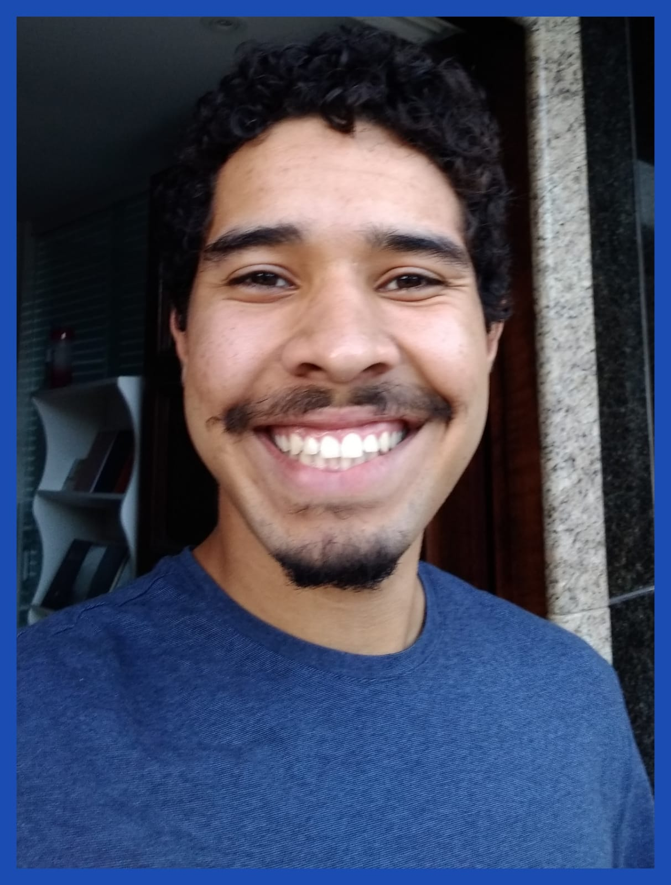

This is my personal and professional data, feel free to analyze it:
This is my personal data:
Birthplace: Joacaba, Brazil
Birthdate: 09/08/2004
My Educational background:
Governor Celso Ramos Basic Education School - High school
Catarinense West University (UNOESC) - Computer Engineering, still graduating
Experience:
Bus Monitor - Autoviação Herval/APAE Joaçaba
Get the disabled students and bring them carefully to APAE;
Observe them throughout the journey to ensure their safety;
Allow them to have a pacific environment despite some differences;
My social media:
Linkedin
GitHub
Instagram